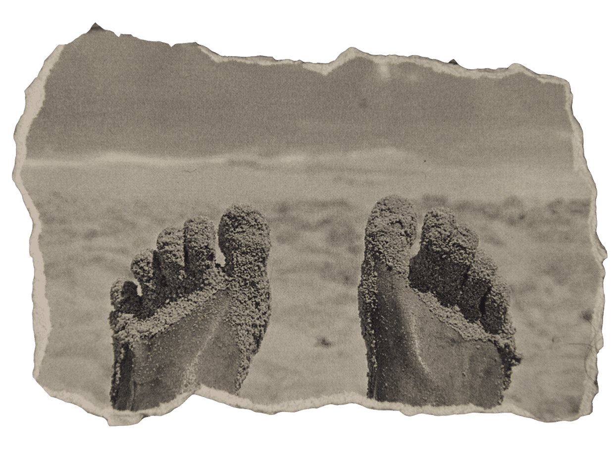
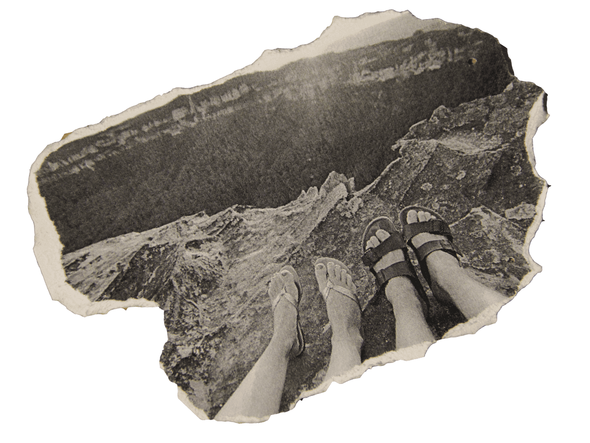
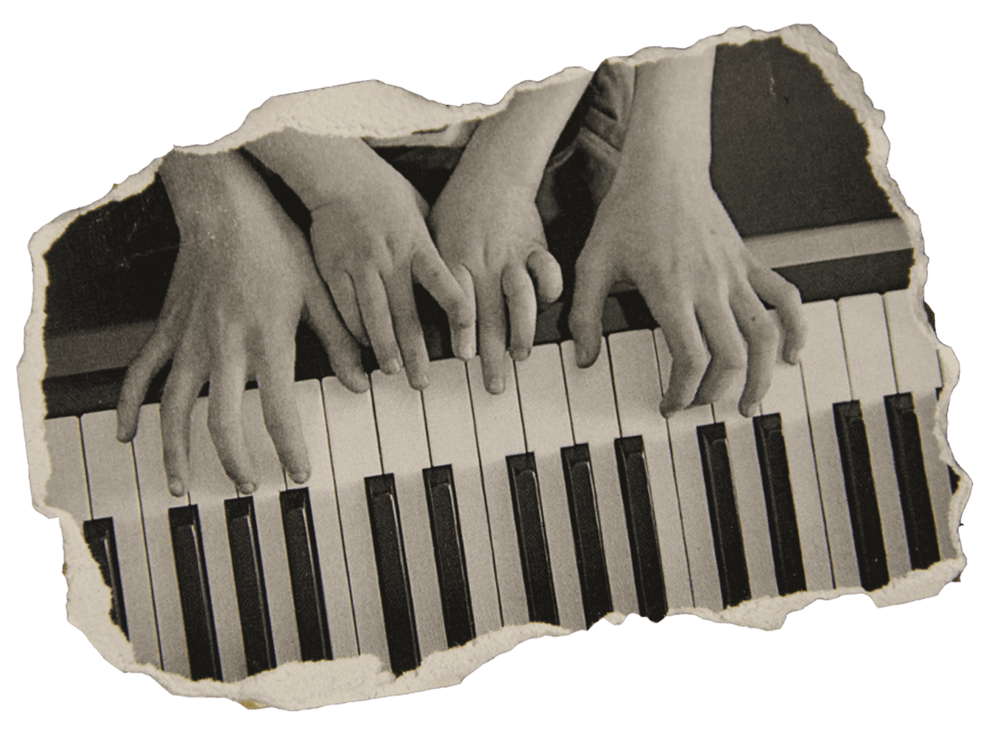
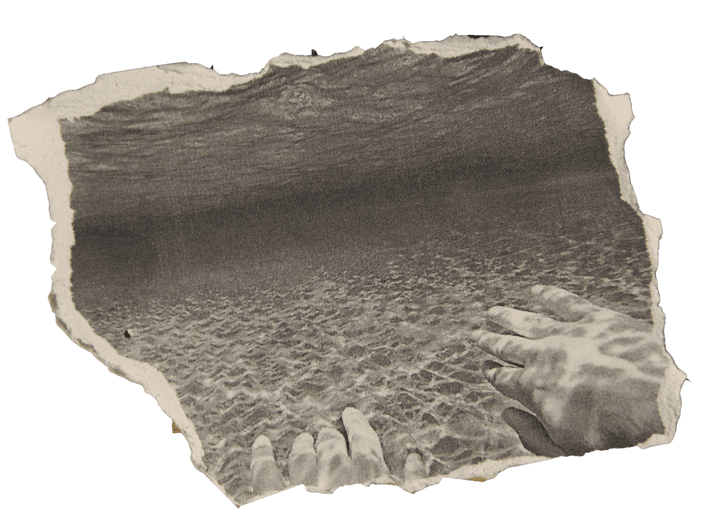

Cохрани самые яркие моменты своей жизни и получи фильм, где главный герой - это ты.
«Иногда стоит оглянуться назад, чтобы вспомнить, что по-настоящему важно. Теперь мы можем фиксировать мельчайшие детали, которые так важны в нашей жизни»